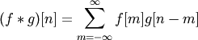
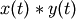
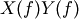

numpy.convolve¶
- numpy.convolve(a, v, mode='full')¶
Returns the discrete, linear convolution of two one-dimensional sequences.
The convolution operator is often seen in signal processing, where it models the effect of a linear time-invariant system on a signal [R17]. In probability theory, the sum of two independent random variables is distributed according to the convolution of their individual distributions.
Parameters : a : (N,) array_like
First one-dimensional input array.
v : (M,) array_like
Second one-dimensional input array.
mode : {‘full’, ‘valid’, ‘same’}, optional
- ‘full’:
By default, mode is ‘full’. This returns the convolution at each point of overlap, with an output shape of (N+M-1,). At the end-points of the convolution, the signals do not overlap completely, and boundary effects may be seen.
- ‘same’:
Mode same returns output of length max(M, N). Boundary effects are still visible.
- ‘valid’:
Mode valid returns output of length max(M, N) - min(M, N) + 1. The convolution product is only given for points where the signals overlap completely. Values outside the signal boundary have no effect.
Returns : out : ndarray
Discrete, linear convolution of a and v.
See also
- scipy.signal.fftconvolve
- Convolve two arrays using the Fast Fourier Transform.
- scipy.linalg.toeplitz
- Used to construct the convolution operator.
Notes
The discrete convolution operation is defined as

It can be shown that a convolution  in time/space is equivalent to the multiplication  in the Fourier domain, after appropriate padding (padding is necessary to prevent circular convolution). Since multiplication is more efficient (faster) than convolution, the function scipy.signal.fftconvolve exploits the FFT to calculate the convolution of large data-sets.
References
[R17] (1, 2) Wikipedia, “Convolution”, http://en.wikipedia.org/wiki/Convolution. Examples
Note how the convolution operator flips the second array before “sliding” the two across one another:
>>> np.convolve([1, 2, 3], [0, 1, 0.5]) array([ 0. , 1. , 2.5, 4. , 1.5])
Only return the middle values of the convolution. Contains boundary effects, where zeros are taken into account:
>>> np.convolve([1,2,3],[0,1,0.5], 'same') array([ 1. , 2.5, 4. ])
The two arrays are of the same length, so there is only one position where they completely overlap:
>>> np.convolve([1,2,3],[0,1,0.5], 'valid') array([ 2.5])